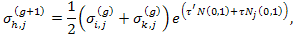

In the (μ, λ)-ES algorithm, the individual i is a set of real-valued vectors (xi, σi) ∀ i ∈ {1,...,λ}. The initial population of x is generated according to a uniform n-dimensional probability distribution over the search space S. Let δx be an approximate measure of the expected distance to the global optimum, then the initial setting for the "mean step sizes" should be
Following the bubble-sort-like procedure is used to rank the individuals in a population, and the best (highest ranked) μ individuals out of λ are selected for the next generation. The truncation level is set at μ / λ ≈ 1/7.
Variation of strategy parameters is performed before the modification of objective variables. We generate λ new strategy parameters from μ old ones so that we can use the λ new strategy parameters in generating λ offspring later. The "mean step sizes" are updated according to the log-normal update rule: i = 1,...,μ, h = 1,...,λ, j = 1,...,n,
|

| (1) |
Having varied the strategy parameters, each individual (xi, σi), ∀ i ∈ {1,...,μ} creates λ/μ offspring on average, so that a total of λ offspring are generated